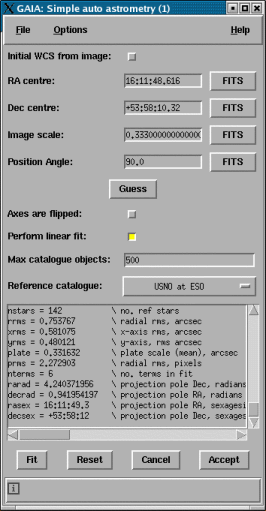

Before you can use this window you need to have available the approximate position on the sky of your image, and some good idea of its image scale (in arcseconds per pixel). Sometimes the orientation is also required, that depends on how well your image matches the on-line catalogue you choose.
Alternatively your image may already has an astrometric calibration that you just want to improve.
Sometimes this information is available from telescope data in your image's FITS headers, so GAIA makes an initial guess based on those that it knows about, if you're in luck these will be shown in the appropriate fields. You can select values from your FITS headers using the "FITS" buttons against each entry field.
The reference catalogue should match your data in the sense that it fully covers the part of the sky in question (obvious), it should also match the colour, in that bright objects in the catalogue are also bright objects on your image. If you cannot match these criteria then you'll probably get a bad fit, or none at all.
For large images (particularly ones from CCD Mosaics) you may need to untick "Perform linear fit" to get a fit that includes optical distortion and also increase the number of objects used from the reference catalogue (you can see this is needed if the just a region of the image shows matched positions after performing a fit).
When you've filled in all the fields with what information you have (note that RA and Dec values should be in the format hh:mm:ss.ss and dd:mm:ss.ss), just press "Fit". If the fit is successful you'll get a catalogue of the positions used in the fit displayed over the image.
If that looks good enough then save the image to disk, if not then you may need to use the advanced toolbox to fine tune the positions that are used.
The real work, which you may have gathered from the log information, is actually performed by the Starlink program AUTOASTROM, which is available to be run from the command-line. If you want to know more about AUTOASTROM look in its documentation SUN/242. The advanced toolbox can display the command it uses to run AUTOASTROM.
If by off-line you mean without a network connection, rather than from the command-line, then you'll need to use the advanced toolbox and use a local catalogue to provide the reference positions.